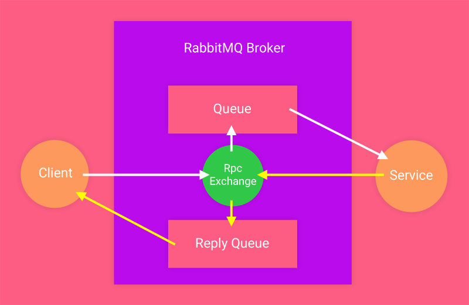
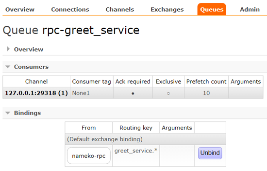
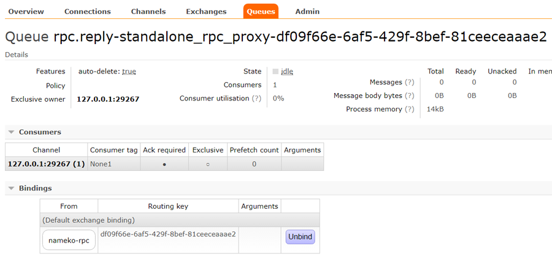
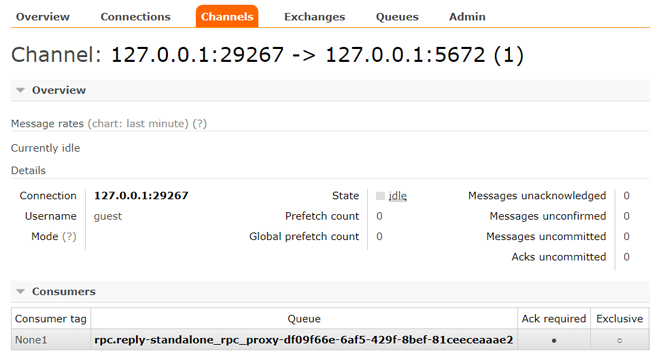
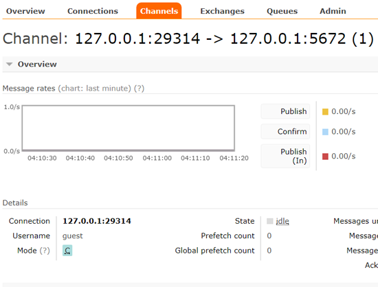
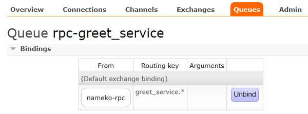
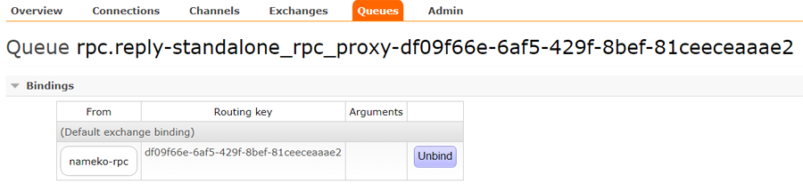

Service In Action¶
We will make a simple setup of a single service connected to a single client. This will use Nameko’s built-in RPC over AMQP extension. Finally, we will observe the system in RabbitMQ.
Prerequisites¶
In this tutorial we will look at many of the concepts. So, sit tight and enjoy the ride, here we go!
Service Code¶
Below code define a simple service class.
1 2 3 4 5 6 7 8 9 10 | # greet_service.py
from nameko import rpc
class GreetService(object):
name = 'greet_service'
@rpc.rpc
def greet(self):
return 'Hello !'
|
imports rpc module from nameko package.GreetService.greet_service.rpc entrypoint.greet.Setup¶
Pretty standard setup where one client is connected to a broker and defines its reply queue and from the other side the service is connected and Let’s go ahead and code all the components and then check the working in RabbitMQ.
Running A Service¶
For this we require a service runner. Fortunately, nameko already has an in-built service runner.
nameko run command will create the service container, add our service in it and finally run it.
nameko run greet_service
Note
don’t specify the python (.py) extension with nameko run
It will start a new python process embedded in a nameko process and connect itself to RabbitMQ broker.
Service In RabbitMQ¶
Service runner will declare a topic exchange (nameko-rpc) in RabbitMQ broker and a queue with the exact name as service
prefixed by rpc-, in our case it is rpc-greet_service and connect service process to this queue as a consumer.
It will also define a binding between the exchange and the queue with routing key as greet_service.*.
Client¶
To a call a service we need a nameko compliant client attached at the other side of broker. Nameko already has
a command named nameko shell to fill the space. It launches an interactive python shell through which we can
make rpc calls.
Client In RabbitMQ¶
nameko shell command act as a producer and declares its reply queue which is exclusive to this producer.
Reply queue’s name is heavily influenced by its producer’s name. Reply queue is bounded to the nameko-rpc exchange
with a routing key as reply queue’s uuid.
Working¶
In a nutshell, client makes a rpc call through the RabbitMQ broker to the service and gets the reply back through its reply queue.
- First use
nameko shellto establish a connection with RabbitMQ. - Then use,
n.<service name>.<service method>to invoke a service. In our case, use the following command innameko shell.
n.rpc.greet_service.greet()
'Hello !'would be the output.
Let’s describe it in a more detail. Shall we ?
nameko shellcommand opens up a connection with RabbitMQ, in this connection it creates a transactional channel through which all messages are send.nameko runcommand too does the similar thing from service side, it opens up a different transactional channel connecting broker and the service.Client sends a message through its channel to
nameko-rpcexchange. At this point, client opens up another channel in confirm mode to publish confirm messages sent to RabbitMQ broker.nameko-rpcroutes this message based on the routing key, where the message routing key (greet_service.greet) should match one of the queue bindings(greet_service.*) defined in exchange. This message gets routed torpc-greet_servicequeue based on the routing key.Service queue pass on this message to the consumer(
greet_service) through it’s transactional channel to service’s entrypoint finally hitting the service method (application logic).greet_serviceprocesses this message and replies back by returning'Hello !'string to thenameko-rpcexchange. Like client, service too creates another channel to publish confirm the messages sent to broker.Reply message contains routing key as reply queue’s uuid and gets routed to the reply queue.
Reply queue finally delivers the reply message to the client through the client’s transactional channel. In the
nameko shellterminal we can check the output.